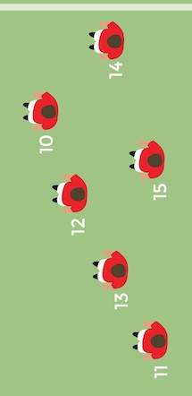

Positioner
I rugby finns det mängder med olika positioner och något som passar alla. Man brukar dela up positionerna i två delar Forwards och Backs.
Forwards
.jpg)
Forward är dom som bildar klungan vilket ni kan läsa mer om i tabben Regler.
Förstaled
I första ledet hittar vi två propps och en hooker mellan dom. Proppsen som startar har nummer 1 och 3. Dom brukar vara dom personerna som väger lite mer men inte är dom längsta på planen. I öppetspel är oftast deras främsta uppgift att bära på bollen. Hooker som är mellan Proppsen har nummer 3 och brukar vara lite mindre i storlek än proppsen men har ofta samma ehenskaper som en propp¨Andraled
Andraledet består av två locks nummer 4 och 5. Locken brukar kalas för drivkraften i klungan och är oftast dom längsta och starkaste när det kommer till att trycka i klungan.
Tredjeled
Här återfinns dom tre sista i klungan, två stycken flankers 6 och 7 plus nummer 8. Dessa positioner är dom som oftast styr i forwardsen och är oftast dom som springer mest av forwardsen med mycket tacklingar.
Backs
Scrum-half
Backarna är restterande 15 spelare på planen. Först har vi nummer 9 eller scrum-half. Han är den spelare som knyter samman forwards och backarna och kallar vilka moves som forwardsen ska köra. Han är oftast mindre i fysiken men skicklig med bollen och hans främsta uppgift är att leverera snabba bollar så att spelet går fort.
Fly-half
Sedan tar vi nummer 10 eller fly-half. Är oftast den bästa kickaren i laget men är också den som styr i backlinjen viljka moves som ska köras och vart.
Centers
Centerana är oftast diom mest vällrundade spelarna på plan. Dom är skickliga tacklare bra på att föra boll och väldigt fysikt starka. Dom behöver även vara bra på att sparka och passa. Centrana har nummer 13 och 14.
Wingers
Yttrana me nummer 11 och 14 är dom snabbaste spelarna på plannnen och dom som är bäst på att undvika motståndarna för att kunna göra försök.
Fullback
Fullbaken är en av dom viktigaste spelarna då han i försvar täcker igen hål och får vara den som gör den avgörande tacklingen när motståndarna kommer igenom. Men han måste också kunna vara med i anfall för att kunna ge understöd till ytttrana.
Det var alla positioner i rugby